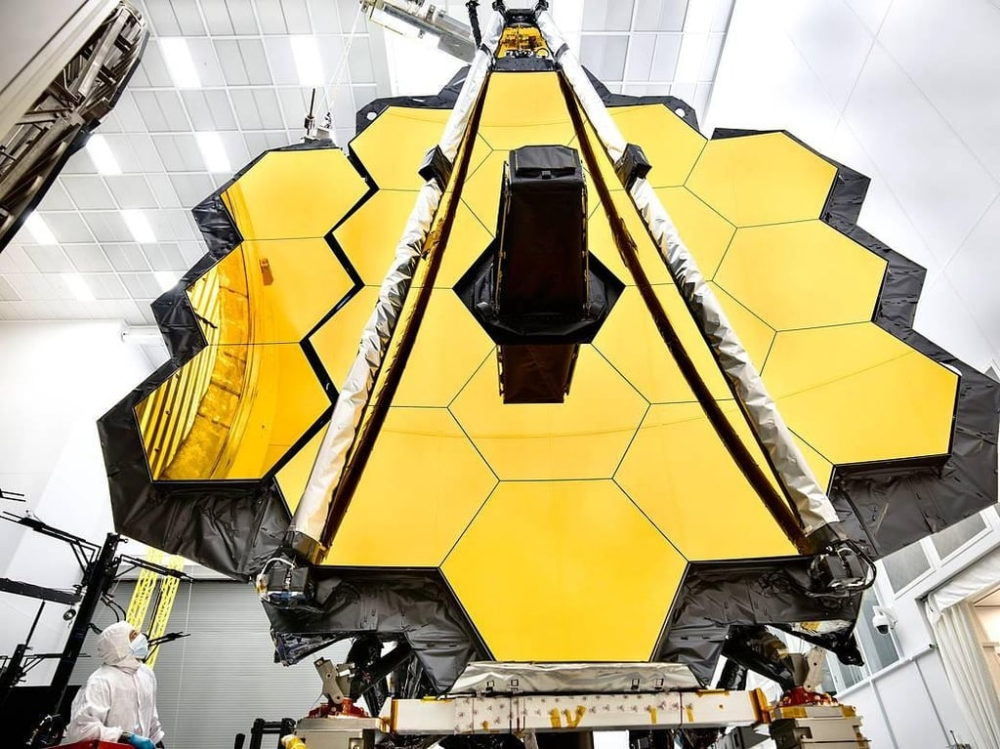

금 코팅 베릴륨 반사경

금 코팅 베릴륨 반사경
우주가 빈공간일거라 생각하지만 아주 미세한 먼지가 많음
근데 그것들이 어마무시한 속도로 처박는거임
근데 이전 생각으로는 거의 우리 지구만한 거리에 먼지 한 톨 정도의 밀도인줄 알았는데 그 정도보단 더 높은 밀도여서 놀란거
우주 공간 전체는 밀도가 아주 낮은데, 적어도 태양계 내부엔 다양한 크기의 먼지나 돌멩이 등이 상당히 많음. 애초에 걔들이 태양계 천체들의 재료였고, 여전히 남은 거라서... 니 말대로 여전히 중력 때문에 태양계에 묶여있는 거고.
그리고 밀도는 넓다 좁다가 아니라 높다 낮다로 표현함 ㅎㅎ
회피기동 기능은 없었나.. ai성능이 떨어지는군
뭐 우주먼지가 제임스웹망원경에 박아봤다고?
그 넓은 우주에서 저게 맞네
우주공간이 존나 넓다보니 저런거 부딪힐 확률이 희박할거 같은데 중력 때문에 밀도가 넓나보네